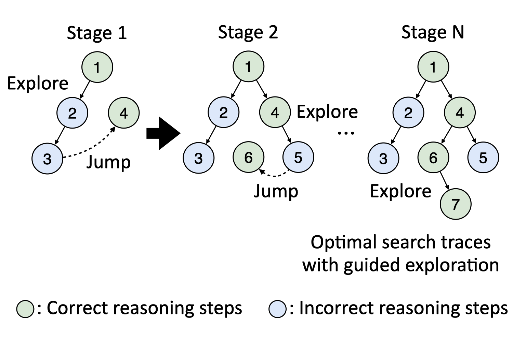
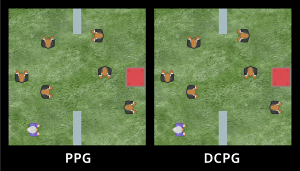

|
Seungyong Moon I am a final-year PhD student in Computer Science at Seoul National University advised by Hyun Oh Song. I previously graduated from the same university with BS in Mathematics, BA in Economics. I will be graduating in February 2027 and am actively seeking postdoctoral or research scientist positions. Please feel free to get in touch! Email / CV / Google Scholar / GitHub |

|
ResearchMy research aims to develop autonomous agents with strong robustness, generalization, and reasoning capabilities. Currently, I am working on enhancing the reasoning capabilities of large language models by leveraging synthetic data generation and designing novel reinforcement learning algorithms tailored for long-horizon reasoning tasks. |
Publications |
|
|  |
Seungyong Moon, Bumsoo Park, Hyun Oh Song Neural Information Processing Systems (NeurIPS), 2025 code / bibtex Learning to search and backtrack improves reasoning in language models but often suffers from inefficient, noisy search. We propose a novel fine-tuning method that progressively incorporates optimal-solution guidance for efficient and effective reasoning. |

|
Seungyong Moon, Junyoung Yeom, Bumsoo Park, Hyun Oh Song Neural Information Processing Systems (NeurIPS), 2023 code / bibtex Discovering subgoal hierarchies in visually complex, procedurally generated environments poses a significant challenge. We develop a new contrastive learning method along with PPO that successfully unlocks hierarchical achievements in the challenging Crafter benchmark. |
|  |
Seungyong Moon, JunYeong Lee, Hyun Oh Song Neural Information Processing Systems (NeurIPS), 2022 code / bibtex The value network trained on multiple environments is more likely to memorize the training data and requires sufficient regularization. We develop a novel policy gradient algorithm that improves generalization by reducing the update frequency of the value network. |

|
Deokjae Lee, Seungyong Moon, Junhyeok Lee, Hyun Oh Song International Conference on Machine Learning (ICML), 2022 code / bibtex Crafting adversarial examples against language models is challenging due to their discrete nature and dynamic input sizes. We develop a query-efficient black-bax adversarial attack targeting various language models from RNNs to Transformers via Bayesian optimization. |

|
Seungyong Moon*, Gaon An*, Hyun Oh Song AAAI Conference on Artificial Intelligence (AAAI), 2022 code / bibtex By harnessing an intriguing property of deep neural networks that they have robust points in the vicinity of in-distribution data, we propose a new defense framework that preemptively alters images before potential adversarial attacks, making it applicable to realistic scenarios. |

|
Gaon An*, Seungyong Moon*, Jang-Hyun Kim, Hyun Oh Song Neural Information Processing Systems (NeurIPS), 2021 code / bibtex The Q-function ensemble technique, originally designed to mitigate overestimation bias in online RL, also proves effective in offline RL with gradient diversification. We develop a simple offline RL algorithm that requires neither behavior cloning nor explicit Q-value penalization. |

|
Seungyong Moon*, Gaon An*, Hyun Oh Song International Conference on Machine Learning (ICML), 2019 (Long talk, 159/3424=4.6%) code / bibtex We develop a query-effecient black-box adversarial attack against deep neural networks based on the local search algorithm for non-monotone submodular function maximization, which does not require gradient estimation and becomes free of hyperparameters to tune. |
Teaching Experience
|
Work Experience
|
Honors and Awards
|
Academic Services
|
|
This website is modified from here. |